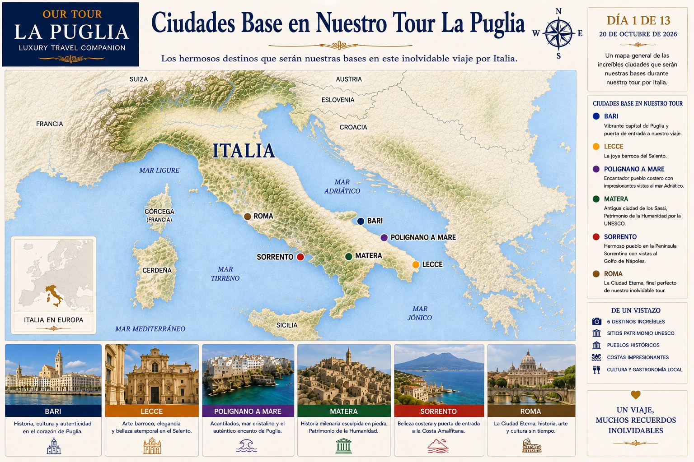
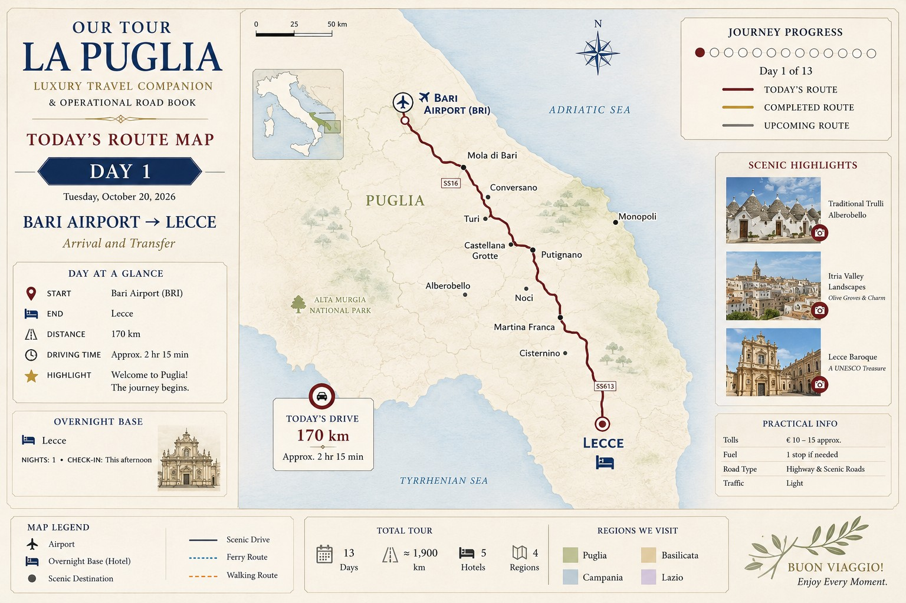
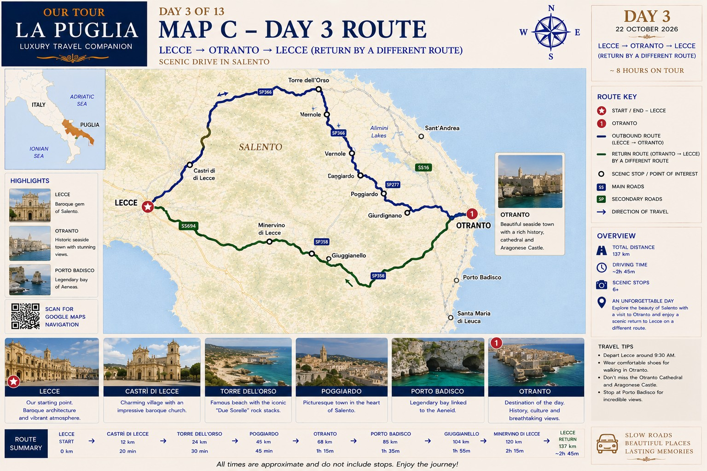
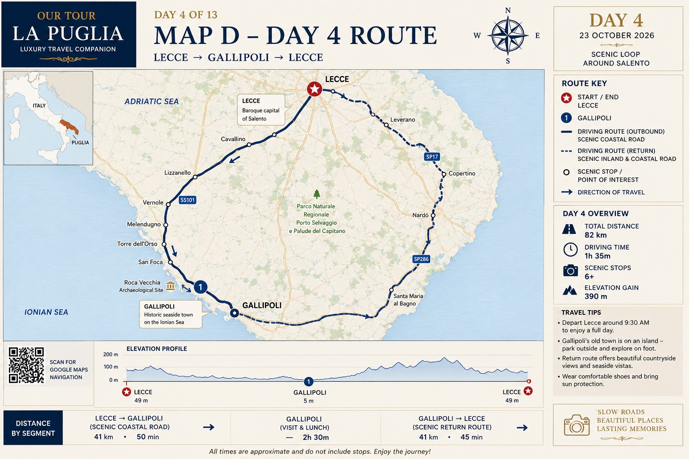
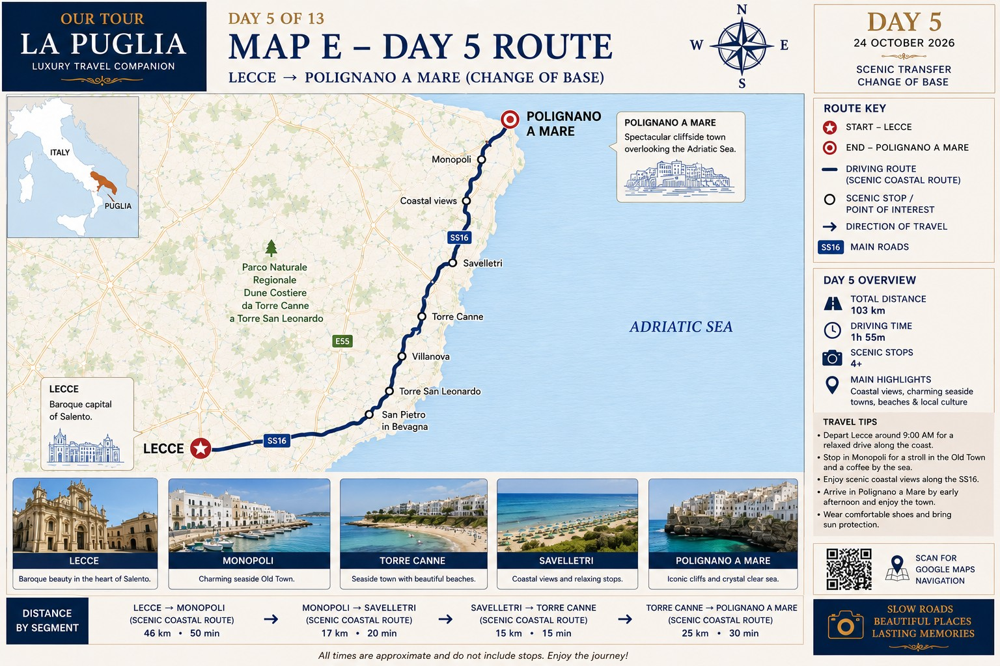
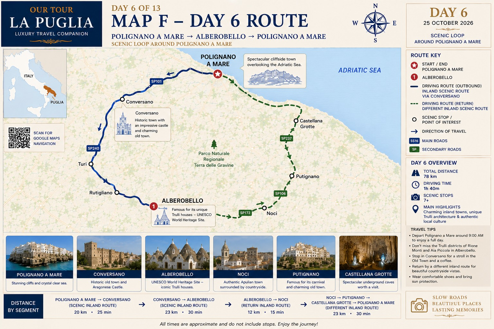
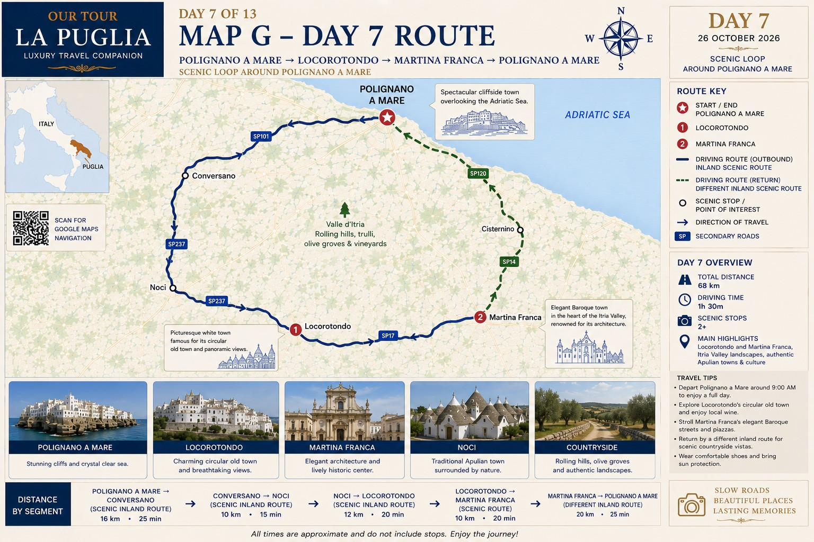
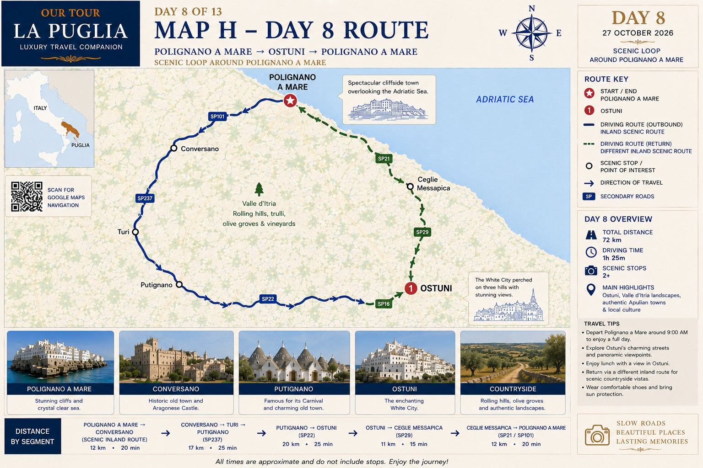
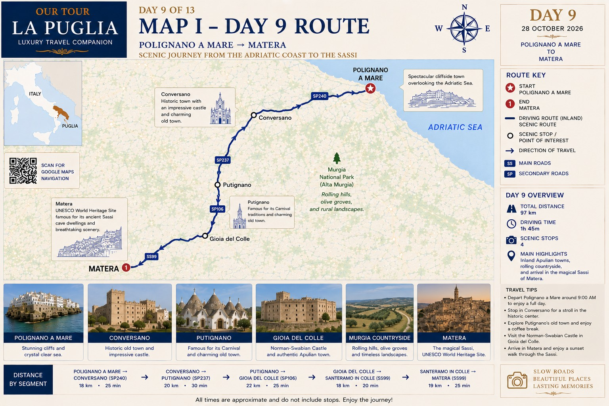
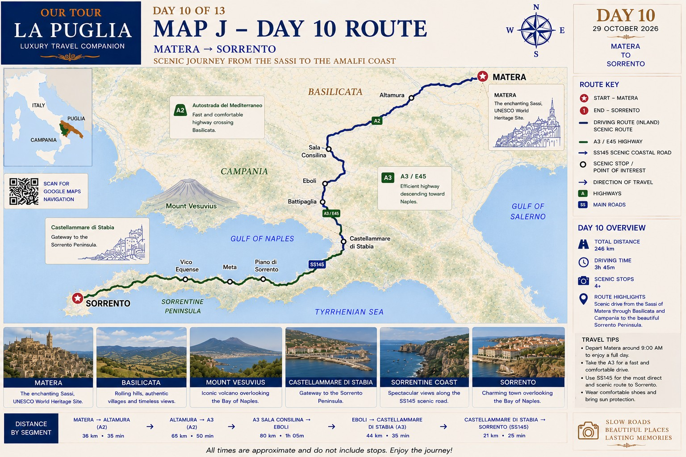

🇮🇹 NUESTRO TOUR LA PUGLIA A ROMA

Detalles de Nuestro Tour
FECHA: 20 de octubre – 1 de noviembre de 2026
Región: Puglia · Basilicata · Campania
Ciudades base: Lecce · Polignano a Mare · Matera · Sorrento
Participantes: Grupo privado
Transporte: Minibús con conductor
📘 Dossier Ejecutivo de Viaje
Incluye:
- ✔ Itinerario detallado
- ✔ Logística diaria
- ✔ Horarios
- ✔ Reservas
Coordinación del viaje
- Hoteles: Augusto
- Transporte y Rutas: Javier
- Restaurantes: Augusto / Javier
🗺 Hoteles
🗺 Transporte
🚐 Transporte Diaro

⛴️ Ferry – Amalfi Coast
TODOS LOS CAMINOS CONDUCEN A ROMA
🗺 Itinerario por Día
🟢🗓 Día 1 – Martes 20 de octubre 🕒 15:00 hrs
✈️ Llegada: Aeropuerto Internacional de Bari
🚐 Traslado: Bari → Hotel en Lecce
📍 Distancia: 167 km
🔵🗓 Día 2 – Miércoles 21 de octubre 🕙 10:00 – 18:00 (8 horas)
🚐 Recorridos locales: Hotel en Lecce → visitas por Lecce → Hotel en Lecce
🟣🗓 Día 3 – Jueves 22 de octubre 🕙 9:00 – 19:00 (10 horas)
🌊 Excursión costera: Lecce → Otranto + Costa Adriática → Lecce
📍 Distancia: 47 km
🟡🗓 Día 4 – Viernes 23 de octubre 🕙 9:00 – 19:00 (10 horas)
🌅 Excursión: Lecce → Gallipoli → Lecce
📍 Distancia: 80 km
🟠🗓 Día 5 – Sábado 24 de octubre 🕙 10:00 – 19:00 (9:30 horas)
🏨 Cambio de base: Lecce → Polignano a Mare (hotel)
📍 Distancia: 116 km
🟢🗓 Día 6 – Domingo 25 de octubre 🕙 9:00 – 20:00 (11:00 horas) *** ciudad iluminada ***
🏛 Valle de Itria: Polignano → Alberobello → Polignano
📍 Distancia: 70 km
🔵🗓 Día 7 – Lunes 26 de octubre 🕙 9:00 – 19:00 (10:00 horas)
🌿 Pueblos blancos: Polignano → Locorotondo → Martina Franca → Polignano
📍 Distancia: 52 km
🟣🗓 Día 8 – Martes 27 de octubre 🕙 8:30 – 18:30 (10:00 horas)
🏙 Ciudad blanca: Polignano → Ostuni → Polignano
📍 Distancia: 97 km
🟡🗓 Día 9 – Miércoles 28 de octubre 🕙 9:00 – 19:00 (10:00 horas)
🏞 Traslado + visita: Polignano → Matera → Hotel en Matera
📍 Distancia: 101 km
🔴🗓 Día 10 – Jueves 29 de octubre 🕙 8:30 – 18:30 (10:00 horas)
🚐 Traslado largo: Matera → Sorrento → Hotel en Sorrento
📍 Distancia: 244 km
******* Fin del Servicio de transporte privado durante todo el recorrido *******
🟢🗓 Día 11 – Viernes 30 de octubre
🌊 Costa Amalfitana: Sorrento → Positano → Sorrento
🔵🗓 Día 12 – Sábado 31 de octubre
🌅 Excursión: Sorrento → Amalfi → Sorrento
🟣🗓 Día 13 – Domingo 1 de noviembre 🕙 10:00
🏛 Último traslado: Sorrento → Roma → Hotel en Roma
🏁✨ FIN DEL TOUR
Día 1 – Lecce
Puntos de Interés
☕ Parada por Café y Descanso – Lecce
Restaurantes
- Alle Due Corti – Corte dei Pandolfi, Lecce
- Trattoria Nonna Tetti – Via Federici 37, 73100 Lecce · +39 0832 246036
- Le Zie Trattoria – Via Costadura 19, Lecce
- La Vecchia Osteria – Vico dei Fieschi, Lecce
- La Scarpetta Ostaria – Via Guglielmo Paladini 56, 73100 Lecce
- Gusti Proibit – Via Cesare Battisti 13, 73100 Lecce · +39 388 049 9366
Día 2 – Lecce
Puntos de Interés
☕ Parada por Café y Descanso – Lecce
Restaurantes
- Alle Due Corti – Corte dei Pandolfi, Lecce
- Trattoria Nonna Tetti – Via Federici 37, 73100 Lecce · +39 0832 246036
- Le Zie Trattoria – Via Costadura 19, Lecce
- La Vecchia Osteria – Vico dei Fieschi, Lecce
- La Scarpetta Ostaria – Via Guglielmo Paladini 56, 73100 Lecce
- Gusti Proibit – Via Cesare Battisti 13, 73100 Lecce · +39 388 049 9366
Sugerencias del Guia
Agregar un recorrido a pie por las antiguas murallas de la ciudad de Lecce, incluyendo una visita a las Mura Urbiche, uno de los espacios históricos más representativos de la ciudad.
🌊 Día 3 – Otranto
📍 Puntos de Interés - Otranto
☕ Parada por Café y Descanso – Otranto
Restaurantes
Sugerencias del Guia
Además de la visita a Otranto, sugiero hacer una parada en el Faro de Punta Palascia, el punto más oriental de Italia. Se encuentra prácticamente sobre la ruta prevista, por lo que es muy fácil incorporarlo a esta excursión sin alterar significativamente el programa.
🐟 Día 4 – Gallipoli
📍 Puntos de Interés - Gallipoli
Restaurantes
Sugerencias del Guia
Añadir una parada en Galatina para visitar la Basílica de Santa Caterina d'Alessandria, una obra maestra de extraordinario valor artístico, famosa por su impresionante interior gótico tardío completamente cubierto de frescos.
🌅 Día 5 – Polignano a Mare
📍 Puntos de Interés – Polignano a Mare
☕ Parada por Café y Descanso – Polignano a Mare
-
The Super Mago del Gelo Mario Campanella
P.zza Giuseppe Garibaldi, 22, 70044 Polignano a Mare BA, Italy
Caffè Speciale (espresso con lemon zest, crema y amaretto) -
Fronte Mare Giuliani – Vista Panorámica
Via Giuseppe Arimondi, 2, 70044 Polignano a Mare BA, Italy
Spritz y vino local
Restaurantes
Sugerencias del Guia
Durante el recorrido hacia Polignano a Mare, podríamos incluir una visita a la Abbazia di Cerrate, un magnífico ejemplo de la arquitectura románica de Apulia, rodeada por antiguos olivares.
Asimismo, podríamos considerar realizar un paseo en barco, con salida desde Polignano a Mare o desde Monopoli, para disfrutar de la costa desde el mar.
🏘 Día 6 – Alberobello
📍 Puntos de Interés - Alberobello
☕ Parada por Café y Descanso – Alberobello
Restaurantes
Sugerencias del Guia
Preferiría mantener este día libre de actividades adicionales programadas, dejándolo abierto para incorporar actividades espontáneas o atender solicitudes especiales que puedan surgir del grupo durante el viaje.
🍷 Día 7 – Locorotondo & Martina Franca
📍 Puntos de Interés - Locorotondo
📍 Puntos de Interés – Martina Franca
Restaurantes
Sugerencias del Guia
Además de las visitas a Martina Franca y Locorotondo, propongo incluir una degustación de vinos, para descubrir la tradición vitivinícola de la región y conocer variedades autóctonas como Primitivo y Negroamaro en un entorno típico y tradicional.
🤍 Día 8 – Ostuni
📍 Puntos de Interés - Ostuni
Restaurantes
Sugerencias del Guia
Como cierre de la etapa en Puglia, podríamos incorporar una degustación de aceite de oliva virgen extra premium en un auténtico frantoio ipogeo, un antiguo molino de aceite subterráneo de gran valor histórico, donde se podrá conocer el proceso tradicional de elaboración y degustar algunos de los mejores aceites de la región.
🌊 Día 11 – Positano
📍 Puntos de Interés - Positano
Restaurantes
🍋 Día 12 – Amalfi
📍 Puntos de Interés - Amalfi
Restaurantes
⛰ Día 9 – Matera
📍 Puntos de Interés - Matera
Restaurantes
🍋 Día 10 – Sorrento
📍 Puntos de Interés - Sorrento
☕ Parada por Cafe/Almuerzo y Descanso
Restaurantes
🏛 Día 13 – Rome
🟢 Día 1 (martes 20 Oct) – Bari → Lecce
🚐 Llegada & Transfer Logistics
🕒 Hora estimada de llegada: 15:00
✈️ Aeropuerto: Bari International Airport – Karol Wojtyła (BRI)
🏨 Hotel: Hilton Garden Inn Lecce
Via Cosimo De Giorgi 62, 73100 Lecce, Italia
🚐 Traslado privado
Ruta: Bari Airport ➜ Hilton Garden Inn Lecce
Distancia: 167 km
Tiempo estimado: 2h15 – 2h30
Hora de salida estimada del aeropuerto: 15:30
(considerando equipaje y encuentro con el conductor)
Hora estimada de llegada al hotel: 17:45 – 18:00
🗺️ Mapa de la ruta

📍 Logística al aterrizar
• El conductor esperará en zona de llegadas con cartel del grupo.
• Tiempo de encuentro + equipaje: 30 min aprox.
• Parada técnica opcional en ruta: café/baño (si el grupo lo desea).
🏨 Check-in hotel
Hotel: Hilton Garden Inn Lecce
Hotel moderno, cómodo para grupo senior.
Ubicado a 8–10 min en taxi del centro histórico.
18:00 – 19:00
• Check-in
• Descanso
• Tiempo libre
🌆 Tarde ligera (opcional)
Tras vuelo largo, se recomienda actividad suave.
19:30 – Minibus al centro histórico
10 min aprox.
20:00 – Cena relajada en Lecce
Nivel caminata: 🟢 Muy bajo
Solo paseo suave por calles planas.
🎯 Objetivo del día
• Llegar sin estrés
• Adaptarse al horario
• Cena tranquila
• Dormir temprano
• Nada de visitas formales este día
🔵 Día 2 (miercoles, 21 Oct) – Lecce Valle de Itria
🏛 Para considerar
Otranto es compacto, pero tiene calles empedradas e irregulares, así que la secuencia es clave.
Florence of the South , a city celebrated for its golden Baroque architecture, Roman ruins, and rich culinary traditions.The historic center is compact and best explored on foot.
El Hilton Garden Inn Lecce está fuera del centro histórico (zona moderna).
🌅 MAÑANA (Barroco → Monumentos principales)
10:00 – Salida del hotel Hilton Garden
1) 🚐 Porta Napoli (10:15 – 10:30)
Puerta monumental del siglo XVI.
2) 🚐 Porta San Biagio (10:45 – 11:00)
Entrada ideal al casco histórico.
Puerta histórica.
✔ Secuencia lógica de sur a norte
3) 🏛 Museo Faggiano (11:00 – 11:45)
🚶 1–2 min caminando.
Muy interesante, pero tiene escaleras irregulares.
• MUST (Museo de Arte Contemporáneo) – más accesible
4) ⛪ Piazza del Duomo (11:50 – 13:00)
🚶 8–10 min (550 m)
Aquí concentras:
• Catedral de Lecce
• Campanile
• Palacio Episcopal
👉 Comprar el LeccEcclesiae Ticket → €11.00 (combo iglesias).
✔ Ubicar el descanso aquí.
🍝 MEDIODÍA (Pausa larga – Evitar la siesta de la ciudad)
En Lecce muchos sitios cierran entre 13:00 y 17:00.
13:00 – 14:00 Almuerzo relajado
Después del almuerzo:
• Paseo suave sin visitas interiores
• Helado
• Descanso en plaza
🏛 Tarde cultural
Piazza Sant'Oronzo (14:05 – 14:20)
🚶 5–7 min (350 m)
Columna de Sant'Oronzo
✔ Zona abierta, sin escaleras fuertes.
Anfiteatro Romano (14:20 – 14:40)
🚶 1–2 min (60 m)
Pequeña visita exterior.
No demanda mucha energía.
🏰 Charles V Castle (14:45 – 15:30)
🚶 5–8 min (350 m)
Caminata corta.
⛪ Basilica di Santa Croce (15:45 – 16:30)
🚶 6–8 min (450 m)
Caminata corta.
La fachada es el máximo exponente del barroco Leccese.
🌇 TARDE – NOCHE
Passeggiata (18:00 – 18:15)
Via Vittorio Emanuele II
✨ La piedra se vuelve dorada al atardecer — es el mejor momento del día.
🍷 Aperitivo (18:15 – 19:00)
🍽 Cena (19:00)
🚶 Distancia estimada caminando
A ritmo normal: 4–5 km en todo el día.
🟣 Día 3 (jueves, 22 Oct) – Otranto y la costa Adriática
🏛 Para considerar
Otranto es compacto, pero tiene calles empedradas e irregulares, así que la secuencia es clave.
🗺️ Mapa de la ruta

🌅 MAÑANA (Historia primero, antes del flujo turístico)
09:00 – Salida del hotel Hilton Garden
Duración aprox. 1h15 (carretera panorámica)
👉 Ideal llegar antes de las 10:15
1️⃣ 🏰 Aragonese Castle (10:15 – 11:00)
Empieza aquí por dos razones:
• Es más fácil caminar hacia abajo luego hacia el Duomo.
• A primera hora está menos concurrido.
La visita no requiere demasiado tiempo.
Si hay exposición, puede extenderse 20 min más.
2️⃣ ⛪ Duomo di Santa Maria Annunziata (11:05 – 12:00)
Punto fuerte del día.
Ver:
• Mosaico del Árbol de la Vida (impresionante)
• Capilla de los Mártires
💡 Consejo:
Tomar 10 minutos sentados observando el mosaico.
Es grande y se aprecia mejor sin prisa.
3️⃣ 🏛 Centro Storico (12:00 – 13:00)
Recorrido ligero y sin rumbo fijo:
• Callejear
• Tiendas artesanales
• Miradores hacia el Adriático
No hacer todo el laberinto — solo las calles principales cercanas al Duomo.
🍝 MEDIODÍA (Evitar sol fuerte)
4️⃣ Almuerzo con vista (13:00 – 14:30)
Almuerzo largo y relajado.
🌊 TARDE (Naturaleza con lógica geográfica)
Después del almuerzo NO caminar bajo el sol dentro del centro.
Mover el vehículo.
5️⃣ 🪨 Bauxite Quarry – Cava di Bauxite (14:45 – 15:30)
🚐 A 5 min en BUS hacia el sur.
⚠️ El terreno es irregular pero la caminata es corta.
Ideal 20–30 minutos máximo.
Es más un “stop panorámico” que una actividad larga.
Ahora decidir según energía del grupo:
OPCIÓN A (Más relajada y accesible)
6️⃣ 🏖 Spiaggia dei Gradoni (15:45 – 17:45)
• Está justo junto al centro histórico
• Acceso sencillo
• Agua poco profunda
No requiere desplazamiento largo.
Perfecta para sentarse y disfrutar sin caminar mucho.
🌇 TARDE – REGRESO A LECCE
7️⃣ ☕ Descanso corto / café (17:45 – 19:00)
🍽 8️⃣ Cena (19:30)
Antes de la cena el paseo final.
🚶 Nivel de caminata estimado
Centro histórico completo: 3–4 km
Con playa incluida: 4–5 km
Con Bauxite: +1 km irregular
✔ Es manejable con pausas.
💡 CONSEJO ESTRATÉGICO
Si el grupo ya hizo Lecce el día anterior, este día debe sentirse más:
• Ligero
• Panorámico
• Sensorial (mar, viento, vistas)
✔ No sobrecargar con demasiados puntos.
🟡 Día 4 (viernes, 23 Oct) – Gallipoli
🏛 Para considerar
Gallipoli es más pequeña y manejable que Lecce, pero el orden influye mucho para no caminar de más.
🗺️ Mapa de la ruta

🌅 MAÑANA – Historia con aire fresco
⏰ 09:00 salida
🚗 40–45 min aprox.
👉 Llegar idealmente antes de las 10:00.
1️⃣ 🌉 Puente del siglo XVII + Vista panorámica (10:00 – 10:15)
Antes de entrar al casco antiguo:
• Vista del castillo
• Fotos del puerto
• Introducción histórica
✔ Es el momento más fotogénico con luz suave.
2️⃣ 🏰 Angevin-Aragonese Castle (10:15 – 11:15)
Empieza aquí porque:
• Está justo al cruzar el puente
• Es terreno más plano
• A primera hora menos grupos
Duración ideal: 45–60 min.
No es necesario recorrerlo exhaustivamente.
3️⃣ 🌊 Perimeter Walk (Murallas) (11:15 – 12:00)
Desde el castillo, caminar bordeando:
• Murallas con vista al mar Jónico
• Viento agradable
• Terreno plano
No dar la vuelta completa si el grupo se cansa.
Solo el tramo más escénico hacia Spiaggia della Purità.
4️⃣ ⛪ Cathedral of Sant’Agata (12:00 – 12:30)
Entrar cuando el sol ya está fuerte afuera.
Es pequeña pero espectacular.
Interior barroco muy rico.
✔ Momento ideal para sentarse unos minutos.
🍝 MEDIODÍA
12:30 – Almuerzo
🌊 TARDE – MAR & RELAX
Después de comer no caminar dentro del casco histórico bajo el sol.
Moverse directamente a:
5️⃣ 🏖 Spiaggia della Purità (13:45 – 16:45)
Ventajas:
• Está bajo las murallas
• Acceso sencillo
• Arena fina
• Agua tranquila
No es necesario que todos entren al agua.
Es perfecta para:
• Sentarse
• Caminar por la orilla
• Disfrutar vista de la ciudad desde abajo
✔ Para grupo +65 es mejor que playas más alejadas.
🌇 TARDE – Regreso suave al centro
Subir lentamente hacia el casco histórico.
6️⃣ 🚶 Paseo corto por calles interiores (16:45 – 17:30)
Ahora el calor baja y el centro se siente más agradable.
Buscar:
• Callejones blancos
• Pequeñas iglesias escondidas
• Balcones con vistas
🌇 TARDE – REGRESO A LECCE
Salida estimada: 17:30
Llegada estimada: 18:15
🍷 8️⃣ Aperitivo (18:15 – 19:30)
Antes de la cena el paseo final.
🍨 9️⃣ Cena y Gelato (19:30)
🚶 Nivel de caminata estimado
✔ Es un día más ligero que Lecce
• Solo centro histórico: 3 km aprox.
• Con playa incluida: 4–5 km suaves
• Terreno mayormente plano
✔ Es manejable para el grupo.
🟠 Día 5 (sábado, 24 Oct) – Lecce → Polignano a Mare
Traslado Lecce ➜ Polignano a Mare (cambio de base)
🏨 Nueva Base
Cala Ponte Hotel – Tribute Portfolio (Marriott)
San Vito, Polignano a Mare, Bari 70044
🚐 TRASLADO PRINCIPAL DEL DÍA
Ruta: Lecce ➜ Polignano a Mare
Distancia: 116 km
Tiempo real de conducción: 1h30 – 1h45
🕘 Salida sugerida: 10:00
🕚 Llegada estimada hotel: 11:45
Aunque el traslado es corto, este día se puede aprovechar muy bien para comenzar a conocer la costa.
🗺️ Mapa de la ruta

🌅 MAÑANA – LLEGADA + PRIMER CONTACTO CON LA COSTA
10:00 – Salida de Lecce
Equipaje cargado previamente.
✔ Parada técnica opcional en autopista (10 min).
11:45 – Llegada a Cala Ponte Hotel
• Descarga equipaje
• Check-in si está disponible
• Si no: dejar maletas y salir
12:00 – Salida hacia Polignano centro
🚐 10 min desde el hotel
🌊 POLIGNANO A MARE – VISITA SUAVE DE INTRODUCCIÓN
Perfecta tras día de traslado.
12:15 – Lama Monachile
⏱ 25 min
• Vista icónica desde el puente
• Mejor luz antes del mediodía
• No bajar a la playa si el grupo está cansado
12:40 – Centro Storico
⏱ 50 min → caminata muy suave
Recorrido circular sin prisa:
• Porta Grande
• Callejones blancos
• Balcones sobre el mar
• Frases poéticas en escaleras
• Piazza Vittorio Emanuele
Nivel caminata: 🟢 bajo-moderado
Todo está cerca.
🍝 ALMUERZO CON VISTA
13:30 – Almuerzo
Duración ideal: 1h45m
✔ Este almuerzo marca el inicio real de la base costa.
🌊 TARDE – EXPERIENCIA CLAVE DEL DÍA
🚤 Boat Tour de las cuevas marinas
(1.5h / 2.0h) → €37.10 Adults
🕒 16:00 – 17:30
✔ Actividad más recomendable del día.
✔ Menos cansada que caminar y muy escénica.
Incluye:
• Grotta Azzurra
• Grotta delle Rondinelle
• Cuevas kársticas
✔ Se disfruta sentado con vistas constantes.
17:30 – Estatua Domenico Modugno
⏱ 15 min
✔ Foto icónica
🌅 OPCIÓN ATARDECER (RECOMENDADO)
17:45 – Lungomare
⏱ 40 min
🚶 1 km de caminata moderada para admirar el atardecer sobre el Adriático.
18:45 – Aperitivo panorámico
19:30 – Cena
👉 Usar taxi local (más práctico) o caminar de regreso al hotel.
🚶 NIVEL DE CAMINATA DEL DÍA
🟢 Bajo-moderado
✔ Perfecto día de transición.
💡 LÓGICA ESTRATÉGICA DEL DÍA
✔ Traslado corto
✔ Introducción suave a la costa
✔ No saturar al grupo
✔ Check-in cómodo
✔ Cena con vista
✔ Energía para días siguientes
Este día no debe ser pesado.
✔ Es día de cambio de base + adaptación.
🎯 IMPORTANTE
A partir de este día:
Polignano se vuelve base para:
• Alberobello
• Locorotondo & Martina Franca
• Ostuni
• Matera
🟢 Día 6 (domingo, 25 Oct) – Alberobello Excursión Alberobello (UNESCO)
🏨 Información General
Base: Cala Ponte Hotel (Marriott) – Polignano a Mare
Tipo de día: cultural + escénico
Nivel caminata: 🟡 moderado (subidas suaves, muchas pausas)
🗺️ Mapa de la ruta

🚐 TRASLADO
Ruta: Polignano a Mare ➜ Alberobello
Distancia: ~30 km
Tiempo real: 35–40 min
🕘 9:00 – Salida del hotel
(Desayuno tranquilo antes)
🕤 09:45 – Llegada Alberobello
✔ Llegar antes de las 9:45 es clave para evitar grupos.
🌞 MAÑANA – TRULLI PRINCIPALES (sin multitudes)
1️⃣ Rione Monti
🕤 10:00 – 11:00
⏱ 1h
• Zona más famosa
• Más de 1,000 trulli
• Subida suave
• Tiendas artesanales
💡 Estrategia:
Entrar temprano → fotos limpias → menos calor.
✔ No entrar en todas las tiendas.
2️⃣ Trullo Siamese
🕥 11:00 – 11:10
⏱ 10 min
✔ Doble cúpula único.
✔ Foto rápida.
3️⃣ ⛪ Chiesa Sant’Antonio (trullo)
🕚 11:10 – 11:30
⏱ 20 min
• Iglesia trullo única
• Punto alto
• Mejores vistas
✔ Pausa breve para sentarse.
☕ 4️⃣ Café panorámico
🕦 11:30 – 12:00
⏱ 30 min
✔ Descanso antes de cruzar al área tranquila.
✔ Café + baño.
🌿 AIA PICCOLA (zona auténtica)
5️⃣ Rione Aia Piccola
🕦 12:00 – 13:00
⏱ 1h
• Más residencial
• Menos tiendas
• Más fotogénico
• Caminata plana
✔ Este es el Alberobello real.
🍝 ALMUERZO
13:30 – Almuerzo
🏛 TARDE – HISTORIA + MIRADORES
6️⃣ Trullo Sovrano
🕝 15:00 – 15:30
⏱ 30 min
✔ Único trullo de dos plantas.
✔ Vale entrar.
7️⃣ Casa D’Amore
🕒 15:30 – 15:45
⏱ 15 min
✔ Visita breve simbólica.
8️⃣ Belvedere Santa Lucia
🕒 15:45 – 17:00
⏱ 1h 15 min
✔ Mejor mirador panorámico.
✔ Luz de tarde ideal.
🌅 ATARDECER
17:00 – Night Tour: Caminata Guiada
Visitas a puntos estratégicos para admirar el “mar de conos”.
⏱ 2h
🚐 REGRESO A POLIGNANO A MARE
🕓 19:00 – Salida
🕔 20:00 – Llegada Polignano a Mare
🍝 20:00 – Cena
🚶 NIVEL CAMINATA
🟡 Moderado → 3–4 km total
✔ Subidas suaves
✔ Muchas pausas
💡 LÓGICA DEL DÍA
✔ Llegar temprano
✔ Evitar calor
✔ Almuerzo largo
✔ Tarde ligera
✔ Regreso temprano
💡 CONSEJOS PRÁCTICOS
• Zapatos antideslizantes
• Calles inclinadas
• No usar tacones
• Sombrero
• Agua
🧠 IMPORTANTE
Alberobello es el día más turístico del viaje.
✔ Por eso:
• temprano
• pausado
🔵 Día 7 (lunes, 26 Oct) – Hotel en Polignano a Mare Excursión: Locorotondo + Martina Franca
🏛 Información General
Duración del servicio: 9:00–19:00 (10 h)
Nivel caminata: 🟡 moderado suave
Tipo de día: pueblos blancos + barroco elegante
🗺️ Mapa de la ruta

🚐 TRASLADOS DEL DÍA
Polignano → Locorotondo: 40 min
Locorotondo → Martina Franca: 20 min
Martina → Polignano: 60 min
🌿 MAÑANA – LOCOROTONDO
Tranquilo, plano y fotogénico.
Perfecto iniciar aquí antes de que lleguen los grupos.
🕙 9:00 – Salida del hotel
Traslado panorámico por el Valle d’Itria.
🕥 9:40 – Llegada a Locorotondo
1️⃣ Centro Storico circular
🕥 9:40 – 11:00
⏱ 1h 20 min
• Calles blancas
• Balcones con flores
• Casas “cummerse”
✔ Terreno plano
✔ Ritmo cómodo
✔ Ideal para grupo senior
2️⃣ ⛪ Iglesia San Giorgio Martire
🕦 11:00 – 11:30
⏱ 30 min
✔ Pequeña y elegante.
✔ Buen lugar para sentarse.
3️⃣ 🌄 Paseo panorámico Via Nardelli
🕛 11:30 – 12:00
⏱ 30 min
Vista abierta del Valle d’Itria.
✔ Uno de los paseos más agradables del día.
☕ 4️⃣ Café relajado
🕧 12:00 – 12:30
⏱ 30 min
✔ Espresso
✔ Baños
✔ Descanso
🚐 TRASLADO A MARTINA FRANCA
🕐 12:30 salida
🕐 13:00 llegada
🍝 ALMUERZO – MARTINA FRANCA
🕐 13:00 – 14:40
⏱ 1h20
🏛 TARDE – MARTINA FRANCA
Más elegante y animada que Locorotondo.
5️⃣ Piazza Plebiscito
🕝 15:00 – 15:45
⏱ 45 min
✔ Centro neurálgico.
✔ Plano y cómodo.
6️⃣ ⛪ Basilica San Martino
🕒 15:45 – 16:30
⏱ 45 min
✔ Barroco espectacular.
✔ Visita corta pero vale la pena.
7️⃣ 🚶 Paseo libre por calles barrocas
🕞 16:30 – 18:00
⏱ 1h 30 min
• Calles crema
• Balcones
• Ambiente señorial
🚐 REGRESO A POLIGNANO
🕔 18:00 salida
🕕 19:00 llegada Polignano a Mare
🌅 TARDE – NOCHE
19:00 – Visita al Centro Storico
🍷 Aperitivo panorámico → Spritz / Vino local
✔ Vista al mar
19:30 – Cena
🚶 NIVEL DE CAMINATA
🟡 Moderado
• 4–5 km
• Calles empedradas
🎯 POR QUÉ ESTE ORDEN FUNCIONA
✔ Locorotondo temprano = silencioso
✔ Almuerzo mejor en Martina
🟣 Día 8 (martes 27, Oct) – Ostuni (La Ciudad Blanca)
🏨 Información General
Base: Polignano a Mare
Distancia: 48 km
Tiempo de traslado: 55 min
Servicio transporte sugerido: 08:30–18:30
Nivel de caminata: Moderado (subidas suaves)
🗺️ Mapa de la ruta

🚐 SALIDA ESTRATÉGICA
08:30 – Salida desde el hotel en Polignano a Mare
✔ Salir temprano es CLAVE.
Permite llegar antes de los grupos turísticos.
09:25 – Llegada a Ostuni
El minibus deja al grupo en parking autorizado bajo el centro histórico.
✔ Subida caminando o en Ape Calessino.
🌞 MAÑANA – CENTRO HISTÓRICO SIN MULTITUDES
09:30 – 12:45
El recorrido es ascendente, terminando en la Catedral (punto más alto).
✔ Así se evita subir y bajar innecesariamente.
1️⃣ Piazza della Libertà (09:30–09:50)
Centro de entrada ideal.
• Colonna di Sant’Oronzo
• Ayuntamiento
• Inicio de la caminata
Aquí se decide:
🚗 Ape Calessino (si alguien quiere evitar subidas)
🚶 Caminata suave de 25–30 min
2️⃣ Subida por Via Cattedrale (09:50–10:45)
Tramo más auténtico.
• Calles blancas
• Arcos
• Tiendas artesanales
✔ No apresurarse.
✔ Es la esencia de Ostuni.
3️⃣ ⛪ Catedral de Ostuni (10:45–11:15)
⏰ Horario habitual: 10:00–13:00
Imperdible:
• Rosetón de 24 rayos
• Fachada gótica
• Interior tranquilo
✔ Momento ideal para sentarse y descansar.
4️⃣ Arco Scoppa (11:15–11:25)
✔ Foto rápida elegante junto a la Catedral.
5️⃣ 🌄 Murallas Aragonesas (11:25–12:15)
Miradores panorámicos.
Vista sobre:
• Olivares infinitos
• Adriático
• Valles
✔ La mejor luz es antes del almuerzo.
🍝 ALMUERZO ESTRATÉGICO
12:15 – 13:15
🌿 TARDE RELAJADA
13:15 – 17:30
✔ Después del almuerzo se baja el ritmo.
6️⃣ Porta del Paradiso (Puerta Azul)
📸 Foto rápida (15 min)
7️⃣ 🚶 Paseo libre sin mapa
• Calles silenciosas
• Ambiente local
8️⃣ ☕ Café panorámico (14:15–15:15)
Momento descanso:
• Espresso
• Gelato
• Baño
🌅 ATARDECER – MOMENTO CLAVE
15:15 – 17:30
📍 Corso Vittorio Emanuele II viewpoint
✔ La ciudad se vuelve dorada.
✔ El mejor momento del día → SUNSET
🍷 APERITIVO
Opciones:
• Pausa Café
Vinos recomendados:
• Primitivo
• Negroamaro
• Blanco Locorotondo DOC
🚐 REGRESO
17:30 – Salida hacia Polignano
18:25 – Llegada Polignano a Mare
19:30 – Cena
🚶 NIVEL DE CAMINATA
🟡 Moderado
• 3–4 km totales
• Subidas suaves
🟡 Día 9 (miercoles, 28 Oct) – Destino -> Matera (noche en hotel en los Sassi)
🏨 Información General
Base salida: Polignano a Mare
Distancia: 101 km
Tiempo de traslado: ~1h45
Servicio sugerido: 09:00–18:00
Nivel de caminata: Moderado–alto (escaleras de piedra)
🗺️ Mapa de la ruta

🚐 TRASLADO ESTRATÉGICO
09:00 – Salida desde el hotel en Polignano a Mare
✔ Trayecto cómodo por carretera interior.
10:45 – Llegada a Matera (zona parking autorizado)
El minibus no entra al centro histórico.
✔ Descenso en punto autorizado + traslado a pie o con tuk-tuk.
👉 Recomendado: dejar equipaje en hotel y salir a caminar ligero.
🌞 MAÑANA – INTRODUCCIÓN HISTÓRICA
11:00 – 13:30
Comenzar en la zona moderna (“Piano”) permite entender Matera antes de entrar en los Sassi.
1️⃣ Piazza Vittorio Veneto (11:00–11:20)
✔ Plaza principal → vista inicial sobre los Sassi.
2️⃣ 🏛 Palombaro Lungo (11:20–11:40)
✔ Enorme cisterna subterránea.
✔ Visita corta y fácil.
✔ Ideal antes de caminar más.
3️⃣ Casa Noha (11:45–12:15)
✔ Presentación audiovisual (25 min).
✔ Explica la historia de Matera.
✔ MUY recomendable para entender lo que verán después.
4️⃣ Entrada al Sasso Barisano (12:15–13:30)
Primera caminata suave:
• Miradores
• Calles de piedra
• Primer contacto visual
✔ Ritmo tranquilo.
Matera Cathedral (Duomo) → punto más alto de la ciudad
San Pietro Caveoso
🍝 ALMUERZO
13:30 – 14:45
✔ Almuerzo sin prisa.
🏛 TARDE – LOS SASSI PROFUNDOS
15:00 – 17:45
✔ Aquí está la parte más impresionante… y físicamente exigente.
5️⃣ Sasso Caveoso (15:00–15:45)
✔ Zona más auténtica / menos turística.
✔ Vista abierta al valle.
6️⃣ 🏠 Casa Grotta di Vico Solitario (15:45–16:10)
✔ Vivienda cueva reconstruida.
✔ Muestra cómo se vivía hasta los años 50.
7️⃣ ⛪ Chiesa Santa Maria de Idris (16:10–16:30)
✔ Iglesia excavada en la roca.
✔ Subida corta pero empinada.
MUSMA → escultura contemporánea ubicada en la cueva palacio del siglo XVII
8️⃣ 🌄 Miradores panorámicos (16:30–17:15)
Puntos clave:
• Belvedere Piazzetta Pascoli
• Vista sobre el barranco
✔ Momento de descanso + fotos.
🌅 ATARDECER MÁGICO
17:30 – 18:30
✔ Matera se transforma al caer el sol.
✔ Las luces se encienden en los Sassi.
Caminar sin rumbo por:
• Callejones
• Escaleras
• Miradores
✔ Uno de los atardeceres más memorables del viaje.
🍷 CENA
19:30
🏨 NOCHE EN MATERA
✔ Hotel dentro de los Sassi.
✔ Check-in tras la caminata.
✔ El conductor pernocta.
🎯 ESTRATEGIA LOGÍSTICA
✔ Matera es el día más físico del viaje
✔ Usar calzado con agarre
✔ Escaleras irregulares
✔ Ritmo pausado
✔ Considerar tuk-tuk si alguien se cansa
🚶 NIVEL DE CAMINATA
Moderado-alto
• 4–5 km
• Escaleras
✔ Totalmente manejable con pausas.
⭐ OPCIONAL
Antes de entrar a Matera:
Belvedere Murgia Materana
✔ Vista panorámica externa espectacular.
✔ +20 min en ruta.
🔴 Día 10 (JUEVES,29 OCT) – MATERA → SORRENTO (TRASLADO PANORÁMICO CON PARADA EN SALERNO)
🏨 Información General
Salida desde: La Corte Vetere – Terrazza sui Sassi
Llegada: Hotel Palazzo Guardati, Sorrento
Duración total del día: 08:30 – 18:15
Conducción total: ~4h30
Mapa: https://maps.app.goo.gl/e4KBMjhoEcRhiZf68
Nivel de caminata: Bajo–moderado (día equilibrado y cómodo)
🗺️ Mapa de la ruta

🌅 MAÑANA EN MATERA
08:30 – Desayuno tranquilo en el hotel
✔ Sin prisas. Últimas vistas de los Sassi antes de salir.
🧳 09:00 – Check-out y carga de equipaje
✔ Prever 15–20 min reales para el grupo.
🚐 09:30 – Salida del hotel
🚗 TRAMO LARGO HACIA CAMPANIA
09:30 – 12:00
⏱ 2h30
🏨 LLEGADA A SALERNO
12:00
🍝 ALMUERZO
12:00 – 12:45
🚐 ÚLTIMO TRAMO DEL DÍA
12:45 – Salida hacia Sorrento
⏱ 1h15
✔ Posible tráfico en zona de Nápoles.
🏨 LLEGADA A SORRENTO
14:00 – 14:15
Drop-off del minibús: Parcheggio Achille Lauro
✔ Caminar al hotel: 5–6 minutos (400 m terreno plano)
Hotel: Palazzo Guardati
Ubicación: centro histórico
🌇 TARDE EN SORRENTO
1️⃣ Piazza Tasso y el Valle de los Mills
14:45 – 15:45
Centro histórico de Sorrento.
✔ Distancia desde hotel: 1 minuto caminando
2️⃣ Centro Histórico – Catedral
15:45 – 18:00
Bagni Regina Giovanna → caminata a las ruinas romanas
3️⃣ 🌅 Marina Grande (mirador al atardecer)
18:00 – 19:00
✔ Distancia caminando: 12 minutos
✔ 900 m leve descenso
✔ Excelente para ver Vesubio al atardecer.
4️⃣ Passeggiata + Aperitivo
19:00 – 19:30
Via San Cesareo → calle comercial histórica
✔ Distancia caminando: 300 m
🍝 CENA
19:30
🎯 ESTRATEGIA DEL DÍA
✔ Este diseño evita el cansancio acumulado
✔ Divide un traslado largo
✔ Añade patrimonio histórico impresionante
✔ Caminata moderada
✔ Almuerzo memorable
✔ Llegada a Sorrento sin agotamiento
✔ Es uno de los días mejor balanceados del viaje.
⏱ RESUMEN DE TIEMPOS REALES
Matera → Salerno: ~2h30
Salerno → Sorrento: ~1h15
Total conducción: ~3h45
🚶 NIVEL DE CAMINATA
Bajo–moderado
✔ Mucho más cómodo que el día completo en Matera.
⚠️ NOTAS OPERATIVAS PARA EL CONDUCTOR
• Salida real: 09:30
• Llegada ideal a Sorrento antes de 14:30
🟢 Día 11 (Viernes, 30 de Octubre) – Destino → Positano
🏨 Base
📍 Hotel Palazzo Guardati
🌅 MAÑANA (Traslado + llegada estratégica)
🚶♂️ 07:50 – Salida del hotel
Caminata corta (8–10 min) → 700 m
📍 hacia: Sorrento Bus Station (Piazza Giovanni Battista De Curtis)
🚌 08:30 – Bus SITA hacia Positano
⏱ ~1h15
💰 €3–€5
⚠️ Llegar mínimo 30 min antes (bus lleno)
📍 09:45 – Llegada a Positano
Bajarse en: Positano Sponda Bus Stop
🌿 1️⃣ Primer contacto
09:45 – 10:15
✔ Bajada suave hacia el centro
🚶♂️ 2️⃣ Bajada al centro histórico
10:15 – 11:00
Escaleras hacia la playa → 500 m
Ruta natural en descenso:
• calles con tiendas
• cerámica local
• ropa de lino
📍 destino: Spiaggia Grande Positano
⛪ 3️⃣ Iglesia principal
11:00 – 11:20
👉 Chiesa di Santa Maria Assunta
✔ Visita corta
✔ Sin esfuerzo físico
✔ Icono del pueblo
☕ 4️⃣ Café / descanso
11:20 – 12:00
Spiaggia Grande (playa principal)
Opciones frente al mar:
• Café
• Aperol Spritz
• descanso clave para el grupo
🍝 5️⃣ ALMUERZO
12:00 – 14:00
🧭 TARDE RELAJADA
14:00 – 16:00
Opciones según energía del grupo:
Opción A (relajada)
• paseo por tiendas
• helado
• fotos
Opción B (muy ligera)
• mini subida parcial (no obligatorio)
🚤 6️⃣ FERRY DE REGRESO (CLAVE)
Positano ➜ Sorrento Ferry (última opción posible)
📍 Puerto: Positano Ferry Port / Marina
🌊 TRAYECTO EN FERRY
✔ Parte más bonita del día
✔ Sin tráfico
✔ Muy cómodo
⏱ ~40 min
💰 €30–€40
⚠️ Nota importante:
En octubre los horarios pueden ser reducidos por temporada.
🚤 RECOMENDACIÓN OPERATIVA
✔ Ferry recomendado: 17:00 – 17:45
Razones:
• mejor luz del día
• menos riesgo de cancelaciones
• llegada cómoda antes de la cena
• mar más estable
🚢 OPERADORES
• Positano Jet
• Alilauro
• NLG Navigazione Libera del Golfo
📍 LLEGADA A SORRENTO
17:30 – 18:00
Puerto: Marina Piccola (Sorrento)
🚶♂️ 10–15 min caminata suave al hotel
🌇 TARDE – NOCHE
✔ Passeggiata ligera
✔ Centro histórico
✔ Aperitivo + cena cerca del hotel
🚶♂️ DISTANCIA TOTAL
• 3–4 km caminando
• Mayormente bajada
✔ Muy manejable
⭐ RESUMEN ESTRATÉGICO
✔ Bus por la mañana (experiencia local)
✔ Ferry por la tarde (experiencia premium)
✔ Cero estrés logístico
✔ Ideal para grupo senior
🔵 Día 12 (Viernes, 31 Oct) – Destino → Amalfi
🚢 Ferry desde Sorrento
📍 Puerto: Marina Piccola Port of Sorrento
🚶♂️ Salir del hotel: 08:30
Caminar: 12 minutos
✅ BEST OPTION
🚤 Recommended Early Ferry
📍 Sorrento ➜ Amalfi
Typical departures:
• 09:00
• 09:15
⏱ Estimated Duration
Approximately 1h05–1h45 depending on the operator.
✅ RECOMMENDED STRATEGY
🚤 Take the 09:00 ferry
Advantages:
✔ Arrive before larger crowds
✔ Better morning light
✔ More relaxed sightseeing
✔ Comfortable lunch timing
✔ Less physical stress for the group
🏛 AMALFI WALKING TOUR
1️⃣ Piazza del Duomo (11:15 – 11:30)
Plaza principal
2️⃣ Catedral de Amalfi (11:30 – 12:15)
Duomo di Amalfi – escalinata famosa
3️⃣ Zona del puerto (12:15 – 13:00)
🍝 ALMUERZO
13:00 – 14:30
☕ CAFÉ HISTÓRICO
Pasticceria Andrea Pansa
⏰ 15:00
🌅 RETURN: AMALFI ➜ SORRENTO
Latest comfortable return options:
• 16:30
• 17:05
After this, options become very limited in late October.
📍 LLEGADA A SORRENTO
17:30 – 18:00
Puerto: Marina Piccola (Sorrento)
🚶♂️ 10–15 min caminata suave al hotel
🚨 IMPORTANT WEATHER NOTE
Late October may bring ferry cancellations due to sea conditions.
Backup plan:
✔ SITA Bus Amalfi ➜ Sorrento
🎟️ WHEN TO BOOK
Do NOT book yet.
Best booking window: August–September 2026
Because:
• final schedules not published yet
• operators may adjust timings
🟣 Día 13 – Sorrento → Rome
🚐 Transferencia Final
Transfer Distance: Approximately 298 km
Total Driving Time: 3h30–4h depending on Rome traffic
Walking Distance: Minimal
Terrain: Flat hotel/airport urban access
Activity Duration: Transfer and departure day
Morning departure from Sorrento.
Private transfer to Rome.
Estimated transfer time:
3h30 – 4h depending on traffic.
🎯 Final de nuestro Tour
Objective of the day:
✔ Smooth conclusion
✔ Minimal stress
✔ Comfortable pacing
✨ Conclusiones y logros complidos?
Objetivos perseguidos durante nuestro tour:
✔ Comfort
✔ Authenticity
✔ Scenic beauty
✔ Local experiences
✔ Relaxed rhythm
✔ Shared memories with friends